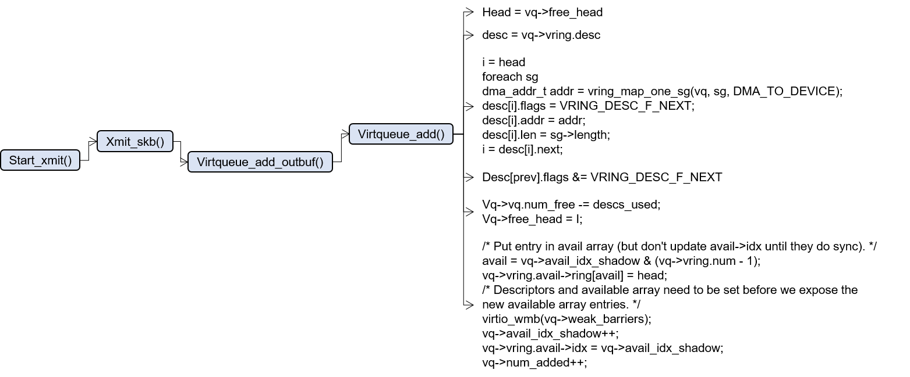
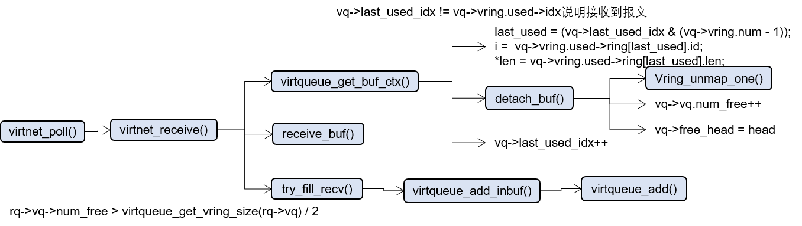

linux virtio-net收发包分析
virio-net数据结构
Linux内核中关于virtio定义的核心数据结构，也是virtio标准中定义的数据结构
/* Virtio ring descriptors: 16 bytes. These can chain together via "next". */
struct vring_desc {
/* Address (guest-physical). */
__virtio64 addr;
/* Length. */
__virtio32 len;
/* The flags as indicated above. */
__virtio16 flags;
/* We chain unused descriptors via this, too */
__virtio16 next;
};
struct vring_avail {
/* The flags as indicated above */
__virtio16 flags;
/* Where the driver would put the next descriptor entry in the ring (% queue size) */
__virtio16 idx;
__virtio16 ring[];
};
/* u32 is used here for ids for padding reasons. */
struct vring_used_elem {
/* Index of start of used descriptor chain. */
__virtio32 id;
/* Total length of the descriptor chain which was used (written to) */
__virtio32 len;
};
struct vring_used {
/* The flags as indicated above */
__virtio16 flags;
/* Where the device would put the next descriptor entry in the ring (% queue size) */
__virtio16 idx;
struct vring_used_elem ring[];
};
descriptors就是存在报文地址（vm物理地址），该地址指向空间的大小。还有flags标记描述符类型，NEXT表示是一个由多个描述符组成的一个报文，INDIRECT则表示addr不再是指向报文存储的地址，而是另一个描述符的地址。next指针如果有flags为NEXT，就是指向下一个描述符，内核里也用来把没空闲的描述符连接起来。
vm发送报文（vm tx）： available ring就是由virtio-net把要发送的报文的描述符id放入ring[]中，idx表示下一个要放的ring[]的位置。 used ring是virtio-net用来回收已经用过的描述符，也就是virtio-device在从avail ring中读取报文后，会把用完的描述符放入used ring中。
vm接收报文（vm rx）: used ring是virtio-device会把要发送的报文的描述符id放入used ring[]中，virtio-net通过used ring来读取收到的报文。 avail ring是virtio-net把从used ring中读取报文后的描述符放入avail ring中。
virtio-net发送报文
在内核virtio-net实现中，vm发送报文(vm tx)

发送时是从vq->free_head记录的descriptor开始使用，然后对avail ring进行更新，对descriptors进行赋值
virtio-net接收报文
vm接收报文(vm rx)

更新used ring，并将vq->free_head/vq->last_used_idx等信息更新。detach_buf释放descriptor。报文在receive_buf()中处理。